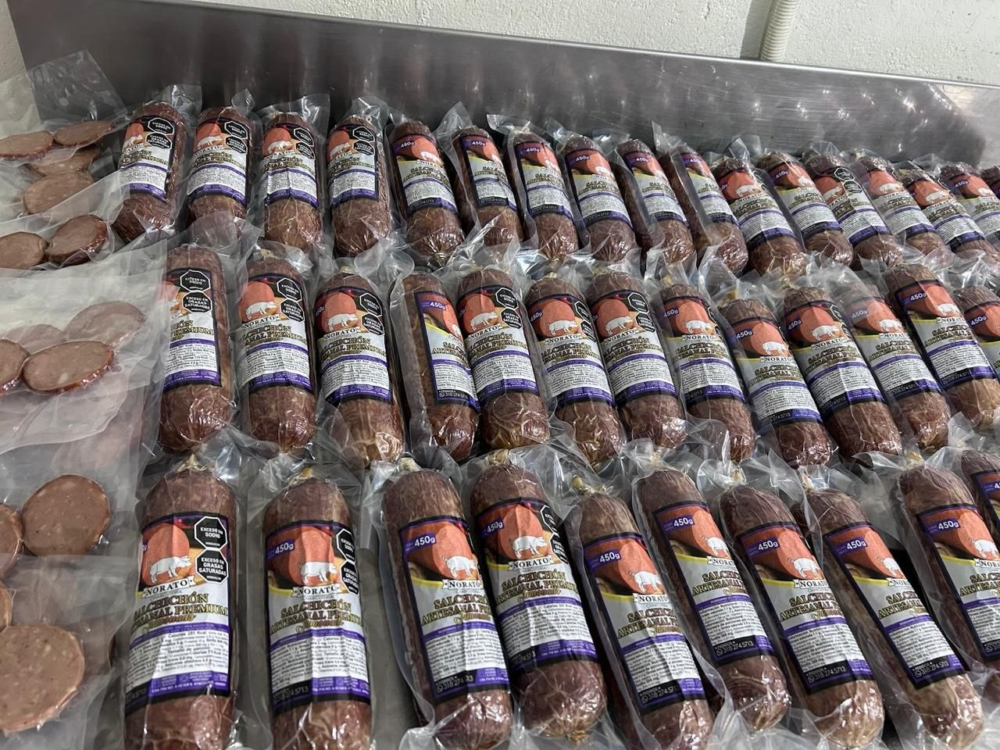
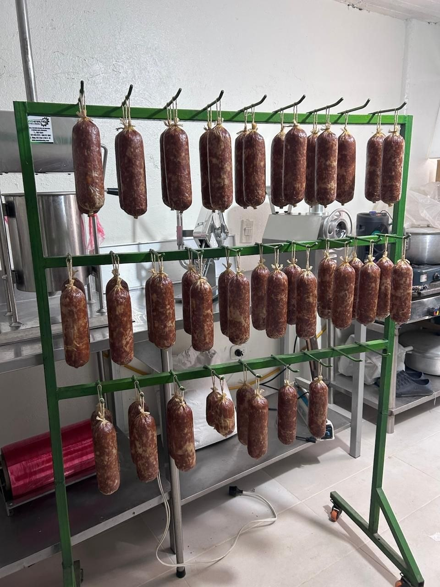

Variedad 02 · Profundidad Suave

Jamonado
Jamonado
sin prisa.
Una textura amable y un sabor curado con sutileza que se queda en el paladar, como las mejores sobremesas en familia.
Pedir Jamonado por WhatsApp ↗La experiencia
Suave al llegar.
Profundo al final.
Jamonado acompaña sin imponerse. Elaborado con magro selecto de pierna de cerdo y curado pausadamente para lograr un corte suave y uniforme que resalta con cada bocado.
Noble · sereno · envolvente
Para sándwiches gourmet, tablas de quesos suaves o la primera degustación con amigos.
Del secadero a la mesa
El producto terminado.


Salchichón Jamonado Norato en presentación de 450g empacado al vacío para máxima frescura y sabor.
También puedes probar